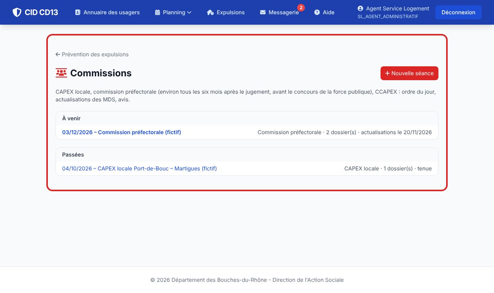
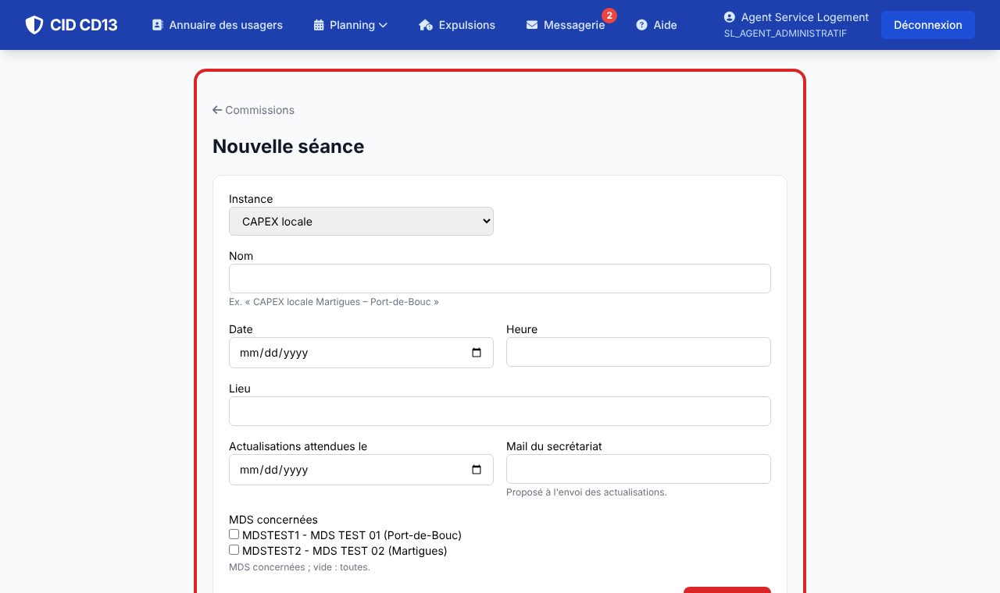
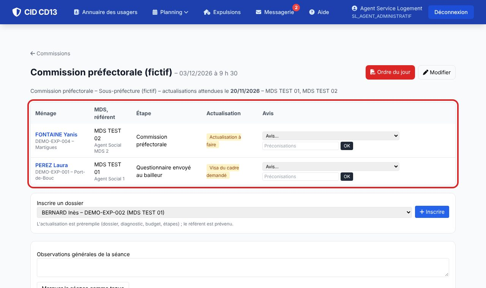
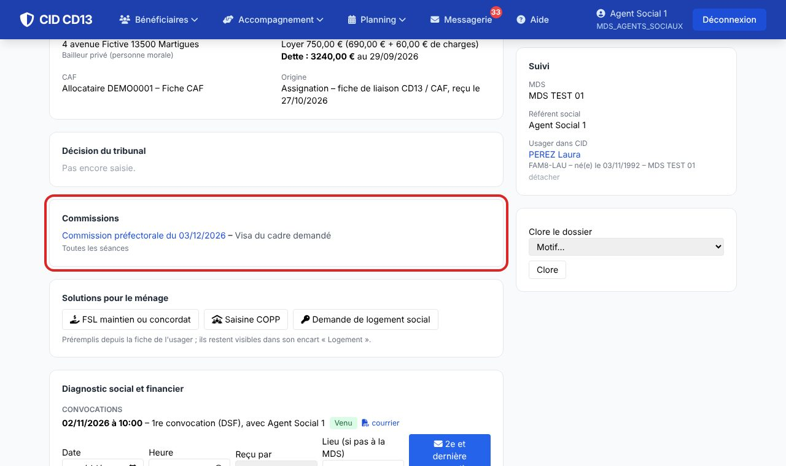
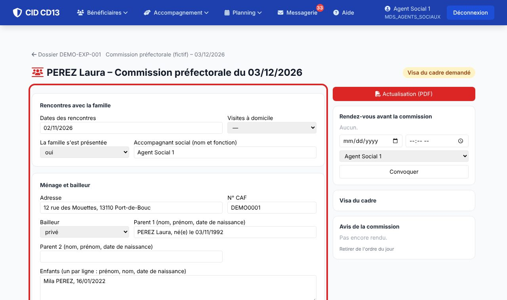
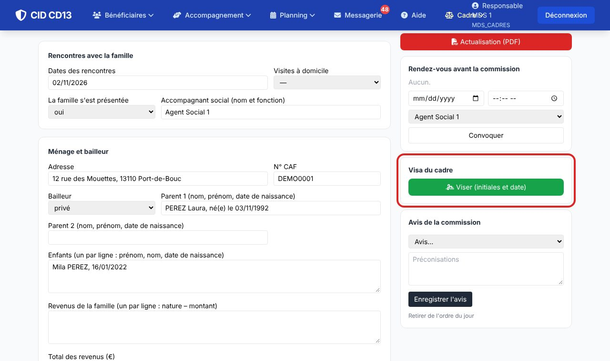
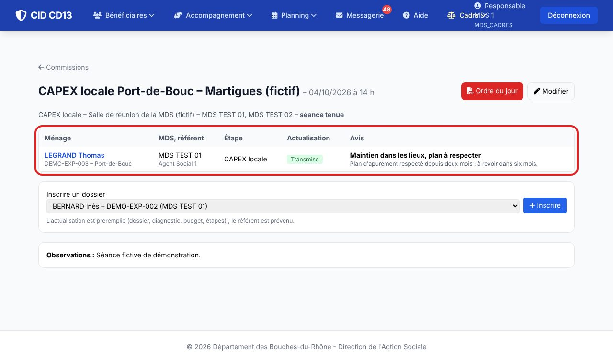
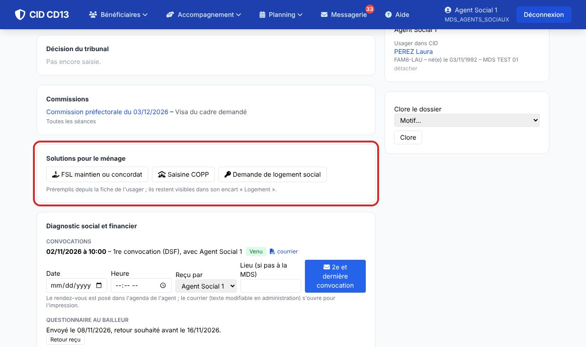

1Les séances


- Prévention des expulsions → Commissions. Le Service Logement ou le cadre d'une MDS concernée crée la séance : instance (CAPEX locale, commission préfectorale, CCAPEX), date, lieu, date limite des actualisations, mail du secrétariat, MDS concernées.
2L'ordre du jour

- Inscrire un dossier en cours : l'actualisation est préremplie et le référent est prévenu.
- Ordre du jour : PDF pour la séance (ménage, MDS, étape, dette, état de l'actualisation), sans données de santé ni détail de l'évaluation. Chacun ne voit que les dossiers auxquels il a accès.
3Inscrire depuis le dossier

- Depuis le dossier, choisissez une séance à venir puis Inscrire à l'ordre du jour.
4Actualiser la situation

- CID reprend les rencontres, le ménage, les revenus du budget du foyer, le logement, la dette, l'historique des étapes, les FSL et le diagnostic social et financier. Complétez l'évaluation et les propositions.
- Au besoin, convoquez le ménage avant la commission : courrier modifiable en administration, rendez-vous dans l'agenda.
5Visa et envoi

- Demander le visa du cadre ; le cadre clique sur Viser (initiales et date sur le PDF).
- Envoi par mail au secrétariat de la commission (adresse de la séance), ou Imprimer pour envoi.
6L'avis de la commission

- Le Service Logement ou le cadre saisit l'avis de chaque dossier (maintien et plan à respecter, délai, orientation, avis sur le concours de la force publique, ajourné…) et les préconisations. L'étape s'ajoute au dossier, le référent est prévenu, les statistiques comptent les avis.
- Marquer la séance comme tenue avec ses observations générales.
7Les solutions pour le ménage

- Quand l'usager est rattaché, le dossier propose directement FSL maintien ou concordat, Saisine COPP et Demande de logement social, préremplis depuis sa fiche.
Bon à savoir
- Le Service Logement voit toutes les séances ; une MDS, celles qui la concernent.
- Le formulaire d'actualisation reprend les rubriques de la fiche « Actualisation pour commission expulsion » ; les convocations suivent les modèles « Convocation avant une commission » et « Relance avant une commission ».
Et ensuite ?
Cliquez sur une image pour l'agrandir. Le cadre rouge montre où cliquer ou quoi remplir. Toutes les données affichées sont fictives.